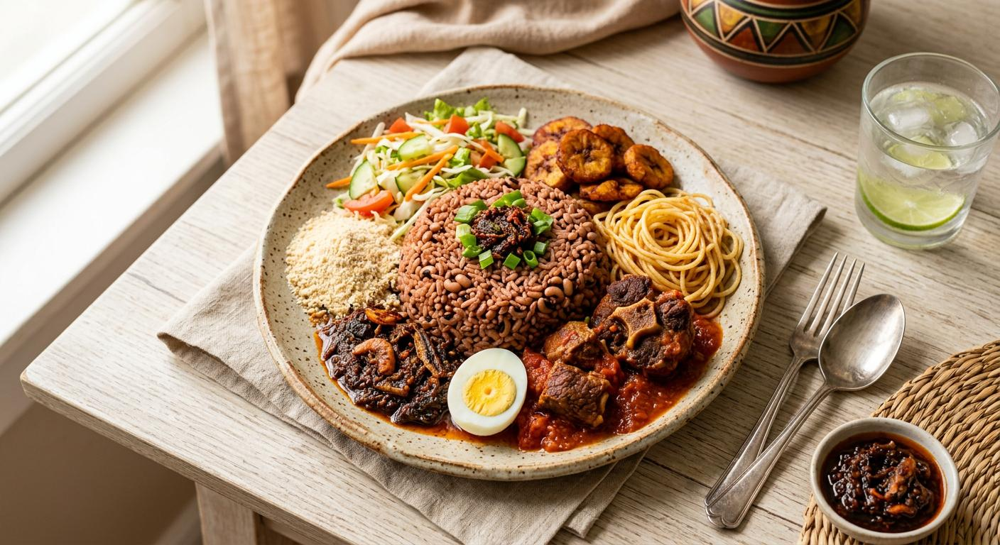

Ghanaian Waakye

Description
Waakye is a popular Ghanaian dish made from rice and beans
cooked together. Traditionally, dried millet leaves are
added to give the food its distinctive colour.
It is commonly served with spaghetti, stew, boiled eggs,
gari, fried fish, meat and shito.
Ingredients
- 2 cups of rice
- 1 cup of black-eyed peas or beans
- Waakye leaves (millet leaves)
- Water
- Salt
Steps
- Pick and wash the beans thoroughly.
- Put the beans in a cooking pot with water.
- Add the waakye leaves and boil until the beans are partly cooked.
- Wash the rice and add it to the pot.
- Add salt and enough water if necessary.
- Cover the pot and cook until the rice and beans are soft.
- Remove the waakye leaves.
- Serve with stew, spaghetti, shito and your favourite sides.
Home